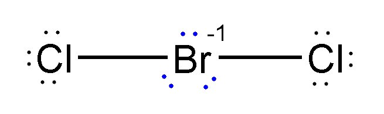

Diagramme de Lewis de BrCl₂⁻
Avant d’utiliser Ketcher, dessinez la structure de Lewis sur une feuille.
Ketcher sert à représenter une structure déjà réfléchie.
Méthode de construction d’un diagramme de Lewis
- Calculer le nombre total d’électrons de valence.
- Dessiner la structure squelettique :
- Les H sont toujours périphériques.
- L’électronégativité de l’atome central est inférieure à celle des atomes périphériques.
- Oxacides : les H sont liés à O.
- La structure est compacte (en étoile, pas linéaire, pas de cycle)
- Les liaisons avec l’hydrogène doivent être explicitement représentées.
- Compléter l’octet des atomes périphériques.
- Assigner les électrons de valence restants à l’atome central.
- Si l’atome central n’atteint pas l’octet, former des liaisons multiples.
-
Quand plusieurs représentations sont possibles, retenir la structure la plus plausible
à l’aide des charges formelles et de l’électronégativité.
Questions de raisonnement
Nombre total d’électrons de valence du BrCl₂⁻ :
Nombre de doublets libres sur l’atome central :
La position des 3 doublets au centre peut ressembler à ça.
